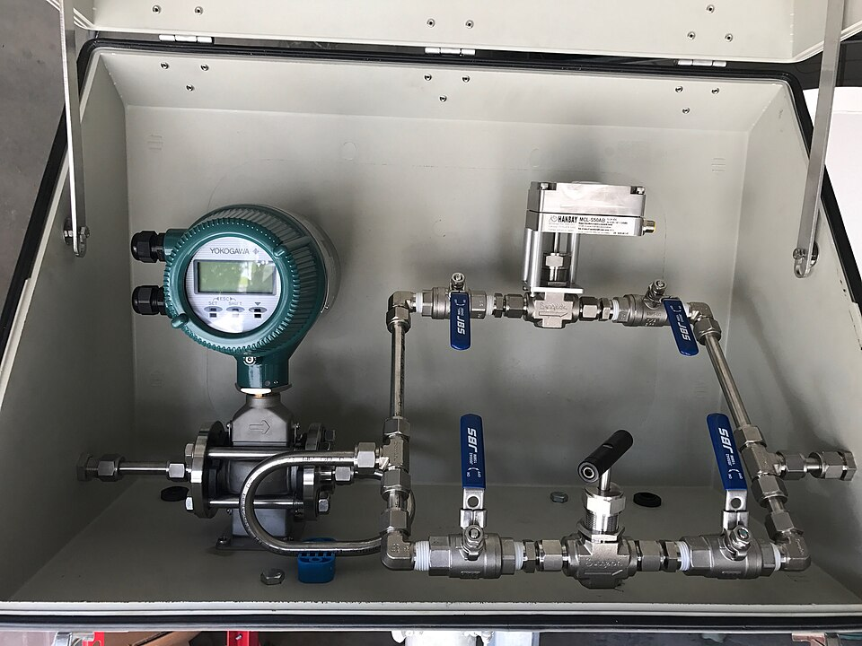
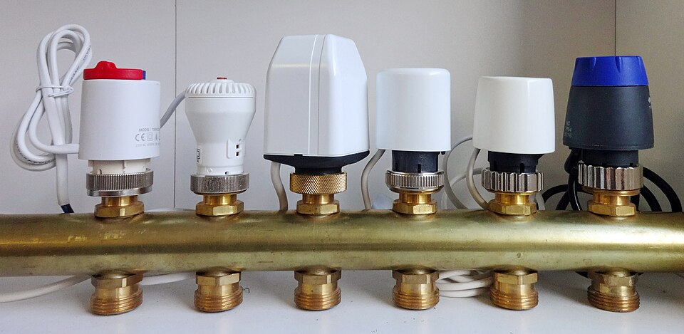

Prove a heating or cooling valve moves and flows
Match the valve to its actuator, check its command and travel, and test the water side on an unpressurised trainer.
Read both nameplates
Trace the pipe going to an air-handler or fan-coil heating or cooling coil. A two-way valve throttles a single passage. A three-way valve has a common port and two branches and may mix or divert, depending on its design. The valve body carries the flow direction and port markings. The actuator drives a stem or shaft through a linkage, usually with a position reference or travel indication. Find both model numbers before matching parts. In the schedule, identify power, command, stroke or angle, feedback type and the designed loss-of-power position. T45 · Command, position and process response.

Photo by Ie edits, Wikimedia thumbnail, with on-page callouts. Original photo · CC BY-SA 4.0.


Photo by Harold2013, Wikimedia thumbnail, with on-page callouts. Original photo · CC0.

Watch Belimo’s ZoneTight actuator demonstration. Look for how the replacement actuator locks to the body. Locate the flow direction separately on the approved product drawing. Belimo’s ZoneTight actuator demonstration on YouTube.
See examples of the commercial valve family and where the body and actuator are shown as a pair. Belimo control valve equipment photos and datasheets.
Prove each stage on a dry bench
Begin with the paper case below and a salvaged loose assembly or its manual. Use a powered actuator only if its exact datasheet permits your isolated ELV supply and you can secure the mechanism on the bench. Some units use 24 V AC only, or have a mains rating. Keep clear of the linkage during travel and disconnect power before fitting or removing the actuator. Installed pressurised piping, hot water and automatic controls require the responsible technician and site procedure.
For a sample direct-acting 2–10 V unit, make a test sheet for 2 V, 6 V and 10 V against the specified common. Predicted demand is 0%, 50%, 100%. Check whether the model has a feedback terminal and how its feedback scales. Record when at rest after the specified travel time.
For each demand, separately record the signal at the actuator, its own indicator or feedback, and a mark on the valve stem or shaft. On a paper trainer, use two movable marks representing the actuator and stem, then deliberately leave one at its original position. Recover the correct linkage after diagnosing the missing movement.
Optional water demonstration. Use a manual valve and short flexible tubing on a separate open gravity rig, with a small reservoir above a catch container. Mark a fixed starting level. Time a measured volume at closed, half travel and open using the same starting head. Disconnect powered devices from the demonstration. Flow changes with head, valve characteristic and piping restriction, so half travel can give something quite different from half flow.
Decide which layer failed
| Demand and observations | Check next |
|---|---|
| 100% on screen, 2 V at a direct-acting actuator | Verify the controller output, common and cable. Compare the measured signal and the specified signal type. |
| 10 V and actuator position changes, stem mark stays still | Inspect the coupling, adaptor and anti-rotation fitting under the approved isolation procedure. |
| Command and stem agree, coil stays cold during a heating demand | Confirm the plant has hot supply water and prove flow through the expected branch. Consider closed isolation valves, clogged strainers, balance or air in the loop. |
| Actuator stops wherever it was when power is removed | Compare with the specified fail-safe behaviour. A spring return, stored-energy actuator and a non-fail-safe device have different loss-of-power behaviour. |
Keep the valve and actuator IDs, the expected port and failure position, and a command, movement and flow test matrix. State which observations are measured on hardware and which are from the paper case.
Continue with the air-handler sequence or point-to-point commissioning.